개요
스핀 프로토콜은 Supplier와 Influencer를 직접 연결해주는 플랫폼이다.
블록 체인 기술을 활용하여 투명하고 공정한 e-commerce 시장을 만들기 위해 중개인을 제거한 Influencer 마케팅을 통해 탈중앙화된 전자 상거래 D-commerce를 구현하는 것이 목표였다.
스핀 프로토콜에서 처음 맡았던 프로젝트로 대표님들과 개발팀과의 긴밀한 협력을 통해 비전을 구축했다.
2019.03 - 2019.09
역할
디자이너, 퍼블리셔, IA설계
Amber(이정주)
플랫폼과 스핀지갑의 기획&디자인&퍼블리싱, 브랜딩디자인, 비주얼디자인, 배너 디자인, 마케팅
기획자
Alex, Lily, Justin
개발자
Harace, Mason, Brandon, Lucy, Alvin
SPIN 이해하기
SPIN 프로토콜은 블록체인 기술을 활용해 Influencer와 Supplier를 직접 연결하는 탈중앙화 e-commerce 생태계이다.
e-commerce Business는 매우 큰 시장으로 다양한 문제점도 가지고 있다.
전통적 e-commerce 대기업들은 독점적 지위를 이용해 상품판매자에게 과도한 수수료, 가격할인요구, 추가적인 광고홍보
비용 등을 요구하는 등 불공정한 시장환경을 조성하였다.
사용자들은 Supplier의 일방적 정보에 의지해야 하며, 심지어 조작된 홍보성 컨텐츠들로 인해 피해를 보기도 한다.
인플루언서 마케팅의 문제점
간단하고 편리한 듯한 현재의 Influencer 마케팅 역시 문제점을 가지고 있다.
1) 중개인 개입으로 인한 폐해
Supplier와 Influencer간 마케팅 활동 협의 과정에서 수차례 중간 비용이 소모된다. 이 과정에서 공급 업체와 Influencer 모두에게 불필요한 중개 수수료가 발생한다.2) 보상과 데이터의 불투명성
Supplier가 직접 Influencer를 다수 만난다 하더라도 Influencer를 판단하는 영향력 평가 도구가 없기 때문에 논란의 여지가 있다. Influencer의 팔로워나 좋아요, 댓글 등 외형적 규모는 비용 책정의 근거가 되기엔 구매 영향력의 데이터가 부족하다.3) 기존 소셜 영향력 평가 방식의 취약성
Influencer 입장에서 팔로워가 많을 수록 Supplier에게 더 많은 보상을 요구할 수 있기 때문에 팔로워 수는 매우 중요한 지표이다.문제 해결을 위해서는 정성적・정량적 구매 영향력 측정 시스템이 필수적이다.4) Influencer에게 필요한 운영 / 기술적 자원 부재
개인 SNS 채널을 통해 상품을 판매하는 소규모 Influencer의 경우, 대부분 기술적 한계로 인해 운영에 어려움을 겪는다. 일부 Influencer의 경우, 독립적으로 샵을 제작하여 활동을 하는 경우도 있으나, 소규모 및 초보 셀러에게는 수익성이 있는 상품을 찾아 판매하는 것은 물론, 납품업체로부터 제품을 받더라도 수수료를 지불해야 하는 등의 문제를 여전히 가지고 있다.스핀 프로토콜의 해결책
1)중개인 제거를 통한 기여 당사자들의 보상 확대
스핀 프로콜의 목표는 Supplier와 Influencer를 연결하는 중간 Agency를 제거하고, 그들이 직접 상품 선택과 수익률에 대해 합의를 할 수 있도록 함으로써, 불필요한 중간 비용을 없애는 것이다.2)데이터를 통한 불투명성의 해결, 합리적인 수익 분배
스핀 프로토콜은 조회수, 댓글, 좋아요와 같은 표면적 지표가 아닌 Influencer의 실질적 구매 영향력을 검증하여 지수화하고, 이를 모든 생태계내 참여자들에게 제공한다.3)Influencer를 위한 운영 및 기술적 지원
스핀 프로토콜은 이러한 독자적인 온라인 스토어 운영의 불편함을 해결하고 누구나 쉽게 indi-seller가 될 수 있는 기회를 제공한다. Influencer는 SPIN 프로토콜의 Commerce Service Provider(CSP) 상에서 직접 개인 온라인 스토어를 열 수 있다. CSP는 공급 업체가 등록한 상품의 리스트를 Influencer에게 제공한다.4)부정행위 방지를 위한 스마트 컨트랙트
스마트 컨트랙트로 거래가 성사되면, 블록체인에 기록된 모든 데이터는 어떤 상황에서도 위조되거나 수정 될 수 없다. 따라서 고객 또는 판매 데이터는 거래 과정에서 안전하게 보호된다.생태계 구성요소
생태계 구성원
SPIN 토큰
스핀 프로토콜 생태계 내에서 각종 거래와 보상에 사용되는 메인 토큰으로 외부 거래소에서 교환가능하며, 프로토콜 내 유동성 공급의 역할도 함께 한다.S.FAME(Influencer 영향력 지수)
Influencer의 실질 구매 영향력을 나타내는 지수. 생태계에서의 활동량을 반영하며 Supplier에게 참고 지표로 Dashboard를 통해 보여진다. Influencer의 영향력과 신뢰도를 가늠하는 지표가 되기 때문에 Influencer는 높은 S.FAME을 얻고자 노력하게 된다.스마트 컨트랙트 시스템
Supplier와 Influencer간 R/S 합의과정을 기술적으로 지원한다. 구매 영향력이나 주요 상품판매 이력 등 상호간 합의에 필요한 주요 정보는 Dashboard로 투명하게 공개되며, 이 정보를 바탕으로 각 참여자간의 R/S 합의를 진행할 수 있다데이터 레이어(Data layer)
Supplier 정보, 상품정보, Influencer의 명성, 소비자 구매패턴, 각 나라별 구매데이터, 구매 취향등 Supplier와 Influencer가 필요로 하는 데이터가 저장된다.스핀 프로토콜 Architecture
스핀 프로토콜 Service Flow

설계
앞서 백서에 기재된 전체적인 흐름을 통해 생태계를 운영하기 위해서 하나의 플랫폼이 필요
하나의 플랫폼안에서 관리자, 인플루언서, 공급자 별로 로그인할 수 있어야하며
각각의 화면들을 구성하여 우먼스톡의 셀럽마켓에서의 셀럽공구가 원활하게 진행되게 하고
스핀을 지급하고 스핀지갑까지 구성하여 가상화폐를 전송까지 해야했다. 또한
인플루언서에게 연동된 커머스 서비스상에서 개인 스토어를 개설하고 판매활동을 시작할 수 있게 해야했다.
대시보드기획, gnb메뉴정립, 로그인하는 상태에 따라 다른 대시보드화면과 그에 따른 캠페인과 정산의 구성
그리고 스핀지갑의 배치문제가 가장 큰 문제였다.
웹화면을 기획하는 동시에 퍼블리싱을 해야했고, 우선순위와 목적에 맞게 개발자들에게 가이드를 제공하고 화면을 빠르게 넘겨줘야했다.
대략적인 화면설계를 통해 개발팀에게 코드를 리딩하였고
각각의 개발자들에게 우선순위를 설정하여 화면의 일부를 넘기고 역할을 배분하여 설계대로 움직일 수 있게 흐름을 만들었다.
1. 캠페인 등록의 flow를 다시 재정립
2. GNB 메뉴 정리 후 대시보드의 기획
3. 대략적인 틀이 잡힌 상태에서 웹화면 설계
4. 스타일 가이드
-
캠페인 선택하는 인플루언서를 위한 프로덕트 시연영상- 브랜드의 데이터베이스를 통한 상품찾기
- 협상 혹은 수정제안
- 협력된 CSP에 등록 -
메인보드에서 캠페인생성을 하는 공급자(브랜드)를 프로덕트 시연영상- 제품등록
- 캠페인 생성
- S.Fame을 기반으로 인플루언서 선택 및 모집
Influencer Site
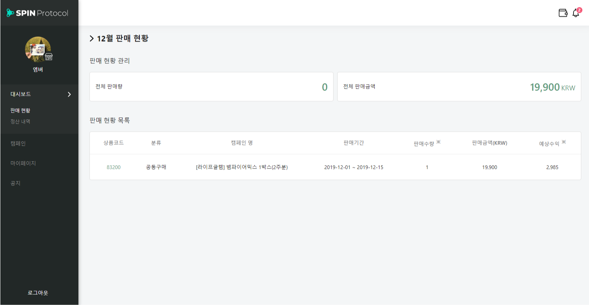
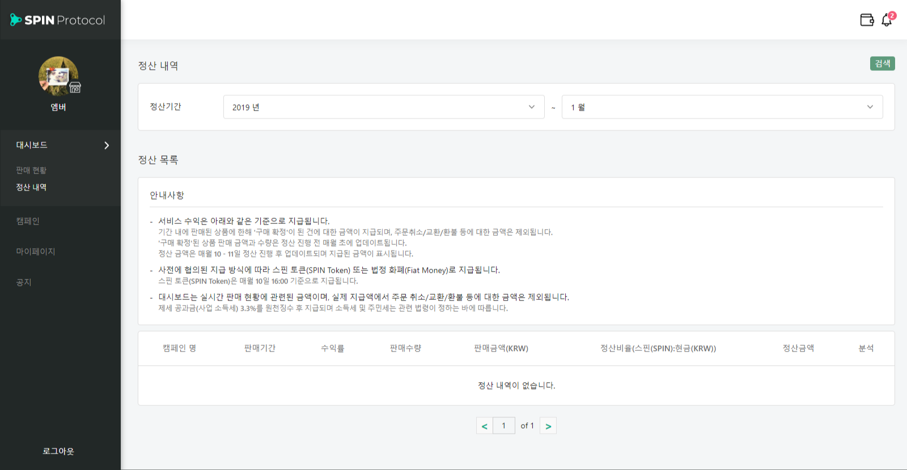
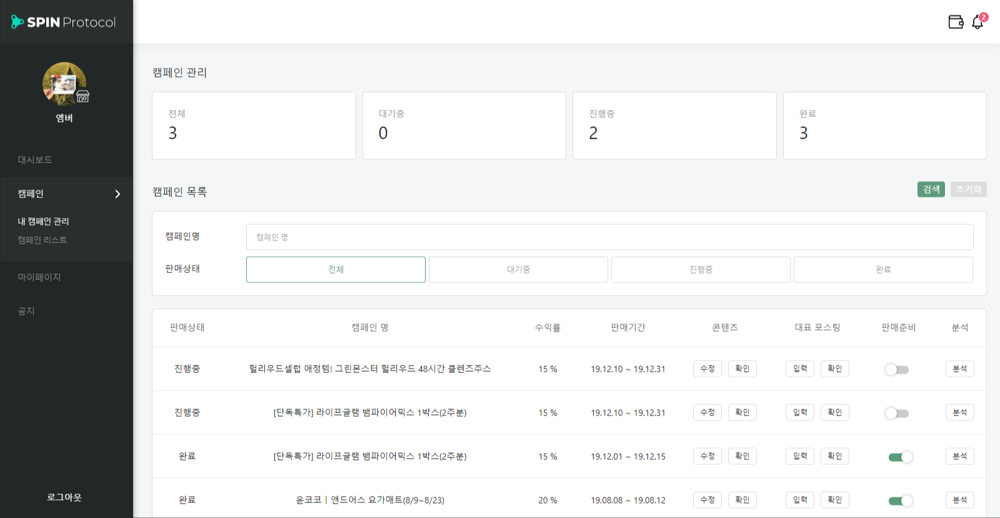
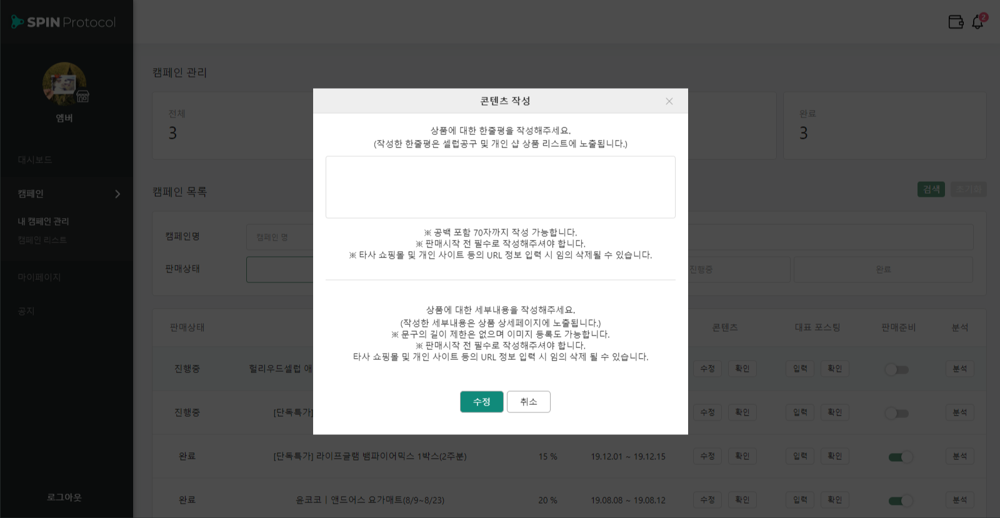
 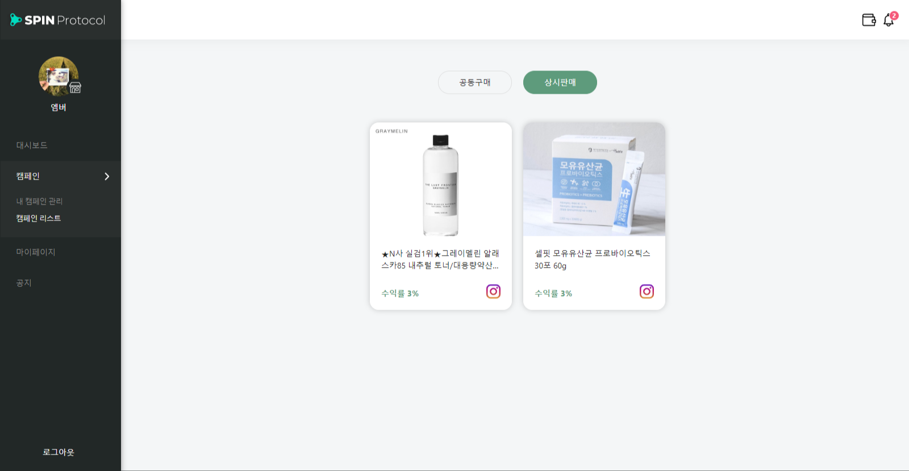
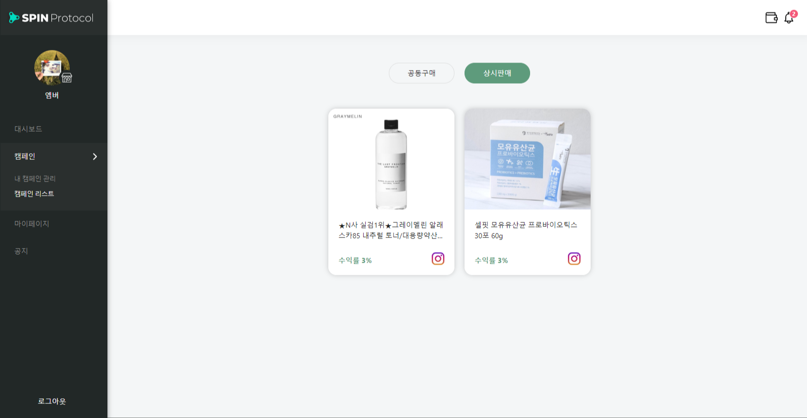
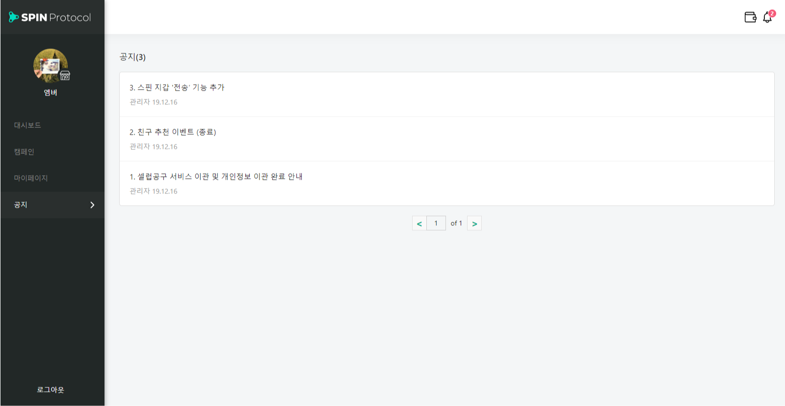
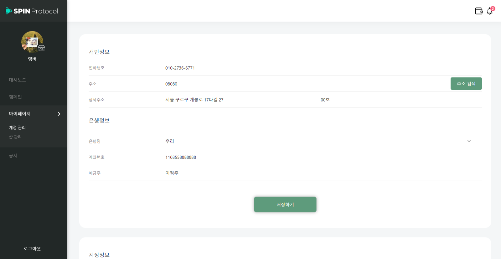
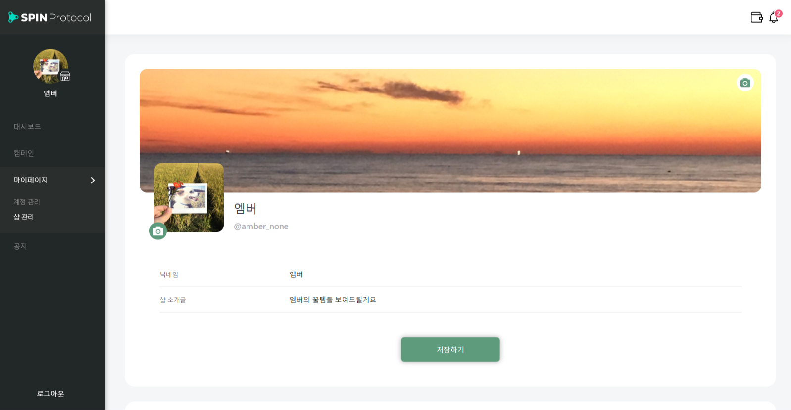
Admin Site
SPIN Wallet 클레이튼 기반 B2B 지갑 시연영상
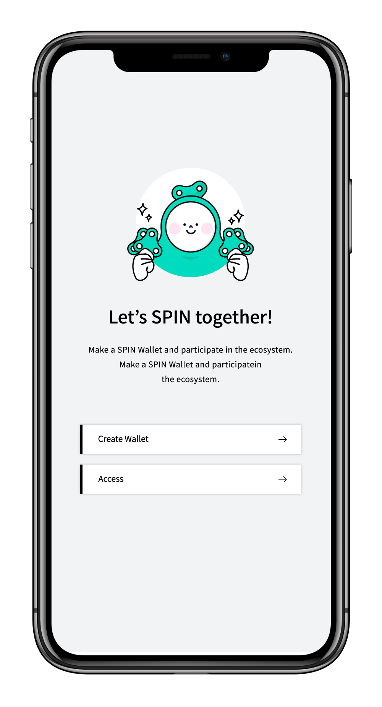
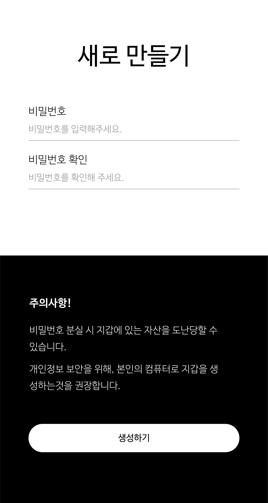
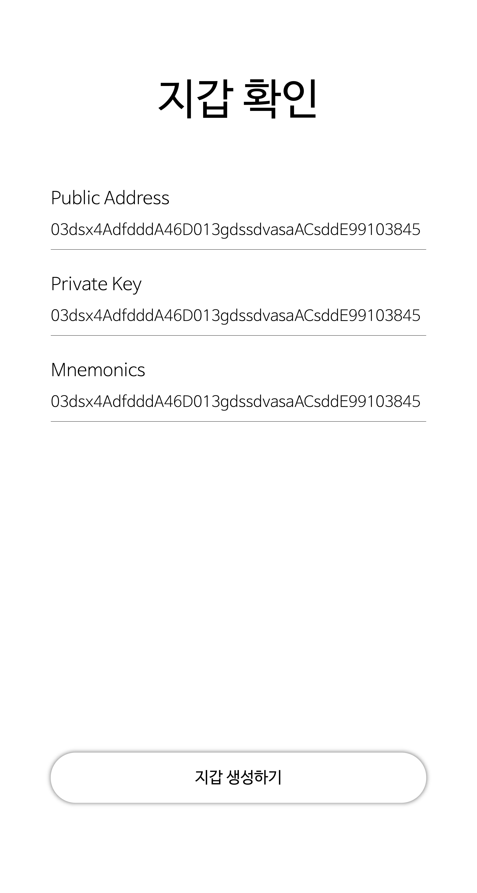
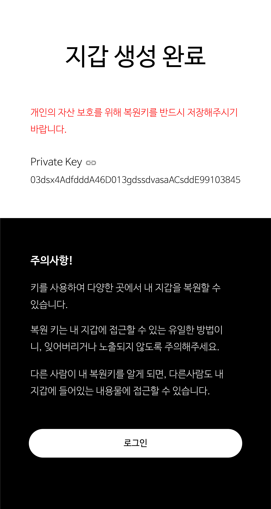
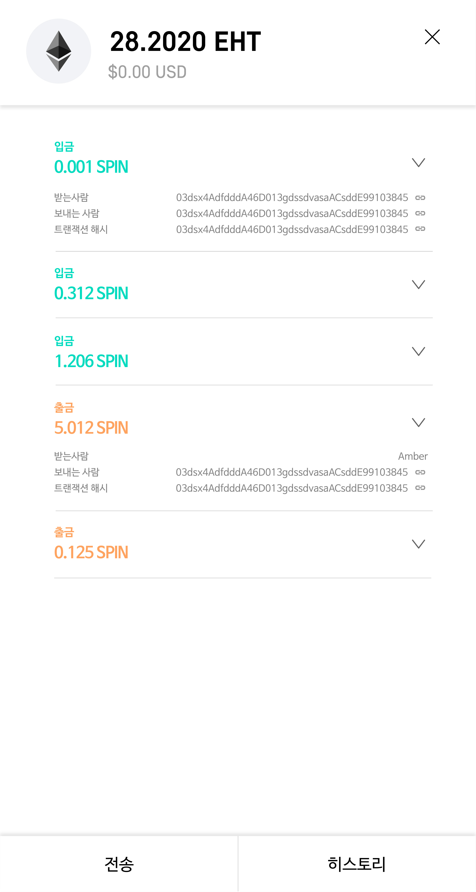
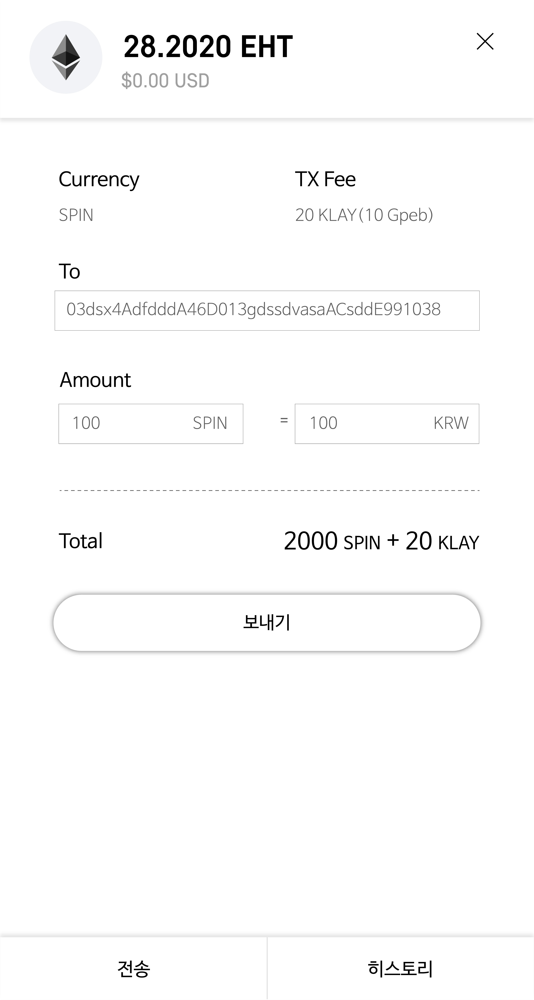
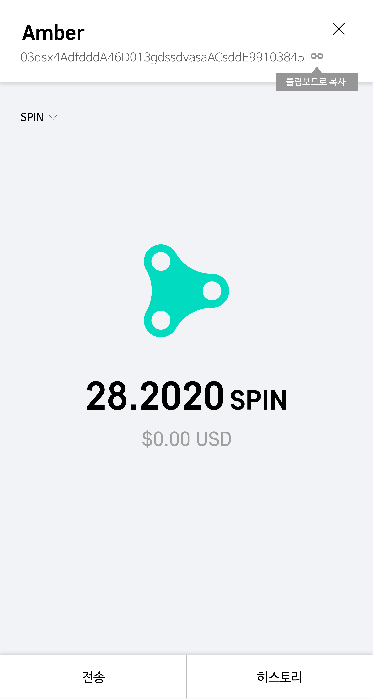
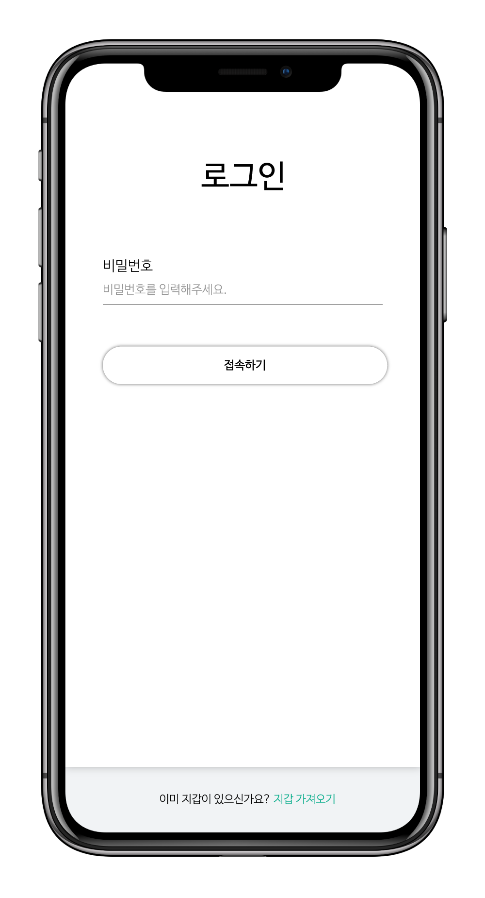